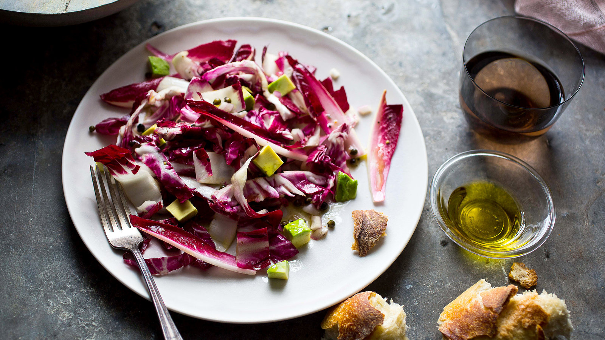

Salad Recipe

Radicchio Anchovy Lemon Salad
Ingredients
- 2 anchovies in oil, drained
- tablespoons white wine vinegar or Champagne vinegar
- 6 tablespoons fragrant extra-virgin olive oil
- 1 tablespoon capers in brine or vinegar, drained (do not use salt-packed)
- Ground black pepper
- ⅓ cup finely chopped red onion
- 1 ripe but firm chilled avocado, peeled and diced (optional)
- 12 to 14 ounces radicchio (5 red-leaf endives, 3 long Treviso or 1 large round radicchio di Chioggia, or a mixture), cored and cut in ½-inch-wide slivers
Steps
- Mash anchovies in a small bowl. Mix in vinegar until well blended. Whisk in oil, fold in capers and season with pepper.
- Place onions in a salad bowl. Add dressing and mix. Fold in avocado, if using. Add radicchio. Gently toss salad. Divide among individual plates or serve at the table.